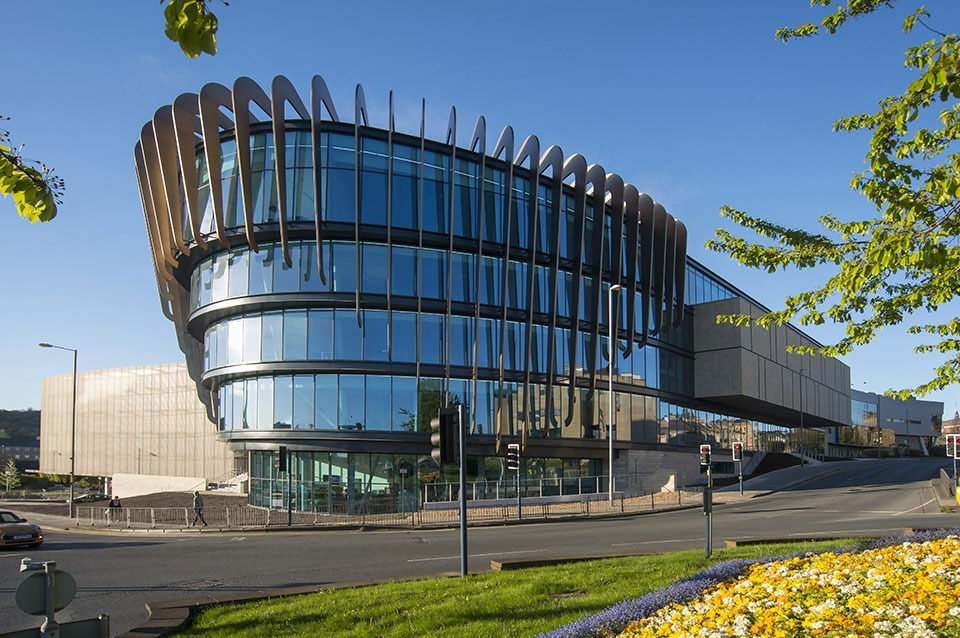

<!DOCTYPE html>
<html>
<head>
    
    <meta http-equiv="content-type" content="text/html; charset=UTF-8" />
    
        <script>
            L_NO_TOUCH = false;
            L_DISABLE_3D = false;
        </script>
    
    <style>html, body {width: 100%;height: 100%;margin: 0;padding: 0;}</style>
    <style>#map {position:absolute;top:0;bottom:0;right:0;left:0;}</style>
    <script src="https://cdn.jsdelivr.net/npm/leaflet@1.9.3/dist/leaflet.js"></script>
    <script src="https://code.jquery.com/jquery-3.7.1.min.js"></script>
    <script src="https://cdn.jsdelivr.net/npm/bootstrap@5.2.2/dist/js/bootstrap.bundle.min.js"></script>
    <script src="https://cdnjs.cloudflare.com/ajax/libs/Leaflet.awesome-markers/2.0.2/leaflet.awesome-markers.js"></script>
    <link rel="stylesheet" href="https://cdn.jsdelivr.net/npm/leaflet@1.9.3/dist/leaflet.css"/>
    <link rel="stylesheet" href="https://cdn.jsdelivr.net/npm/bootstrap@5.2.2/dist/css/bootstrap.min.css"/>
    <link rel="stylesheet" href="https://netdna.bootstrapcdn.com/bootstrap/3.0.0/css/bootstrap-glyphicons.css"/>
    <link rel="stylesheet" href="https://cdn.jsdelivr.net/npm/@fortawesome/fontawesome-free@6.2.0/css/all.min.css"/>
    <link rel="stylesheet" href="https://cdnjs.cloudflare.com/ajax/libs/Leaflet.awesome-markers/2.0.2/leaflet.awesome-markers.css"/>
    <link rel="stylesheet" href="https://cdn.jsdelivr.net/gh/python-visualization/folium/folium/templates/leaflet.awesome.rotate.min.css"/>
    
            <meta name="viewport" content="width=device-width,
                initial-scale=1.0, maximum-scale=1.0, user-scalable=no" />
            <style>
                #map_8b3d3583baa540d75b80b51a7c0e3dce {
                    position: relative;
                    width: 100.0%;
                    height: 100.0%;
                    left: 0.0%;
                    top: 0.0%;
                }
                .leaflet-container { font-size: 1rem; }
            </style>
        
</head>
<body>
    
    
            <div class="folium-map" id="map_8b3d3583baa540d75b80b51a7c0e3dce" ></div>
        
</body>
<script>
    
    
            var map_8b3d3583baa540d75b80b51a7c0e3dce = L.map(
                "map_8b3d3583baa540d75b80b51a7c0e3dce",
                {
                    center: [53.6429, -1.777],
                    crs: L.CRS.EPSG3857,
                    ...{
  "zoom": 16,
  "zoomControl": true,
  "preferCanvas": false,
}

                }
            );

            

        
    
            var tile_layer_29e216bbb9270152100146b326e84326 = L.tileLayer(
                "https://tile.openstreetmap.org/{z}/{x}/{y}.png",
                {
  "minZoom": 0,
  "maxZoom": 19,
  "maxNativeZoom": 19,
  "noWrap": false,
  "attribution": "\u0026copy; \u003ca href=\"https://www.openstreetmap.org/copyright\"\u003eOpenStreetMap\u003c/a\u003e contributors",
  "subdomains": "abc",
  "detectRetina": false,
  "tms": false,
  "opacity": 1,
}

            );
        
    
            tile_layer_29e216bbb9270152100146b326e84326.addTo(map_8b3d3583baa540d75b80b51a7c0e3dce);
        
    

        function geo_json_3aab8be35dbf30af8f3fa1b026925cf9_onEachFeature(feature, layer) {
            layer.on({
            });
        };
        var geo_json_3aab8be35dbf30af8f3fa1b026925cf9 = L.geoJson(null, {
                onEachFeature: geo_json_3aab8be35dbf30af8f3fa1b026925cf9_onEachFeature,
            
            ...{
}
        });

        function geo_json_3aab8be35dbf30af8f3fa1b026925cf9_add (data) {
            geo_json_3aab8be35dbf30af8f3fa1b026925cf9
                .addData(data);
        }
            geo_json_3aab8be35dbf30af8f3fa1b026925cf9_add({"coordinates": [[[[-1.7816076, 53.6401686], [-1.781275, 53.6402185], [-1.7805724, 53.6405087], [-1.7800473, 53.640764], [-1.7795929, 53.6409986], [-1.7811914, 53.6412117], [-1.7816076, 53.6401686]]], [[[-1.7810614, 53.6415622], [-1.7799705, 53.6414011], [-1.7794429, 53.642724], [-1.778535, 53.6426118], [-1.778558, 53.6425322], [-1.7785218, 53.6419761], [-1.7786077, 53.6417805], [-1.77967, 53.6419555], [-1.7798617, 53.6414635], [-1.7793241, 53.6412476], [-1.7791702, 53.6411783], [-1.7789904, 53.6410613], [-1.7787929, 53.6409328], [-1.7784569, 53.6407142], [-1.7780322, 53.6410205], [-1.7777563, 53.6412244], [-1.7773382, 53.641143], [-1.776669, 53.6417148], [-1.7762159, 53.6419061], [-1.7762283, 53.6419752], [-1.7765053, 53.6421123], [-1.7753025, 53.6432597], [-1.775583, 53.6435856], [-1.775426, 53.6437099], [-1.7751871, 53.6438989], [-1.7757473, 53.6441786], [-1.77534, 53.6444745], [-1.7768313, 53.6451169], [-1.7771046, 53.6450771], [-1.7776819, 53.644695], [-1.7782078, 53.6443715], [-1.7787496, 53.6441676], [-1.7793309, 53.644034], [-1.7798607, 53.6439332], [-1.7801425, 53.6438138], [-1.7802607, 53.643686], [-1.7803392, 53.6435738], [-1.7806832, 53.6427189], [-1.7810614, 53.6415622]]]], "type": "MultiPolygon"});
        geo_json_3aab8be35dbf30af8f3fa1b026925cf9.setStyle(function(feature) {return feature.properties.style;});

        
    
            geo_json_3aab8be35dbf30af8f3fa1b026925cf9.addTo(map_8b3d3583baa540d75b80b51a7c0e3dce);
        
    
            var marker_78ac757b1dbddb95805f403ef517b5a3 = L.marker(
                [53.644687676943896, -1.777221326180791],
                {
}
            ).addTo(map_8b3d3583baa540d75b80b51a7c0e3dce);
        
    
            var icon_b0d176e97bb2f95a2841c6e3acf6e43c = L.AwesomeMarkers.icon(
                {
  "markerColor": "blue",
  "iconColor": "red",
  "icon": "heart",
  "prefix": "glyphicon",
  "extraClasses": "fa-rotate-0",
}
            );
            marker_78ac757b1dbddb95805f403ef517b5a3.setIcon(icon_b0d176e97bb2f95a2841c6e3acf6e43c);
        
    
        var popup_78c058bf66d1cc86103b11b4da6d2835 = L.popup({
  "maxWidth": 450,
});

        
            
                var html_dd39b1f7e12e05bd9af954838b74061a = $(`<div id="html_dd39b1f7e12e05bd9af954838b74061a" style="width: 100.0%; height: 100.0%;"><h1>Oastler Building</h1><p>The home of Music, Humanities and Media. History, English Language, Linguistics and Modern Languages, English Literature and Creative Writing, and Film Studies all have classrooms and brand new facilities for staff and students.</p></div>`)[0];
                popup_78c058bf66d1cc86103b11b4da6d2835.setContent(html_dd39b1f7e12e05bd9af954838b74061a);
            
        

        marker_78ac757b1dbddb95805f403ef517b5a3.bindPopup(popup_78c058bf66d1cc86103b11b4da6d2835)
        ;

        
    
    
            marker_78ac757b1dbddb95805f403ef517b5a3.bindTooltip(
                `<div>
                     Oastler Building
                 </div>`,
                {
  "sticky": true,
}
            );
        
</script>
</html>